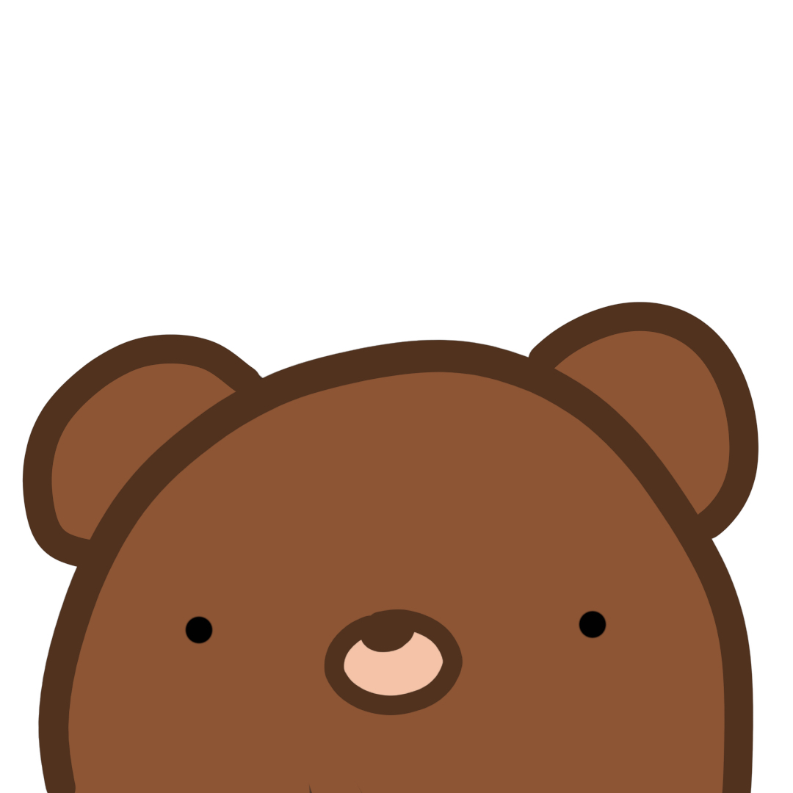
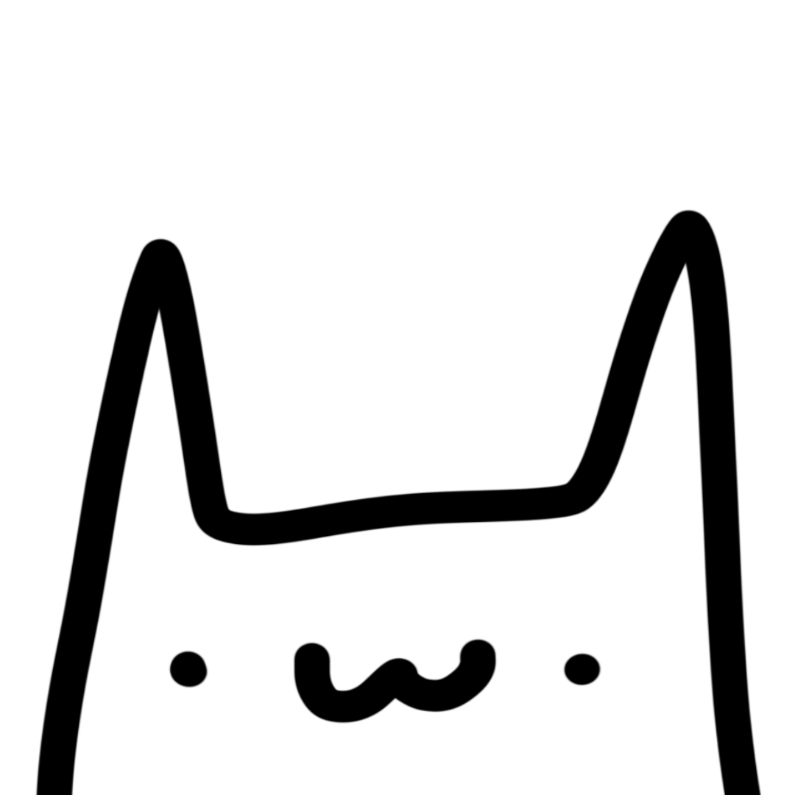
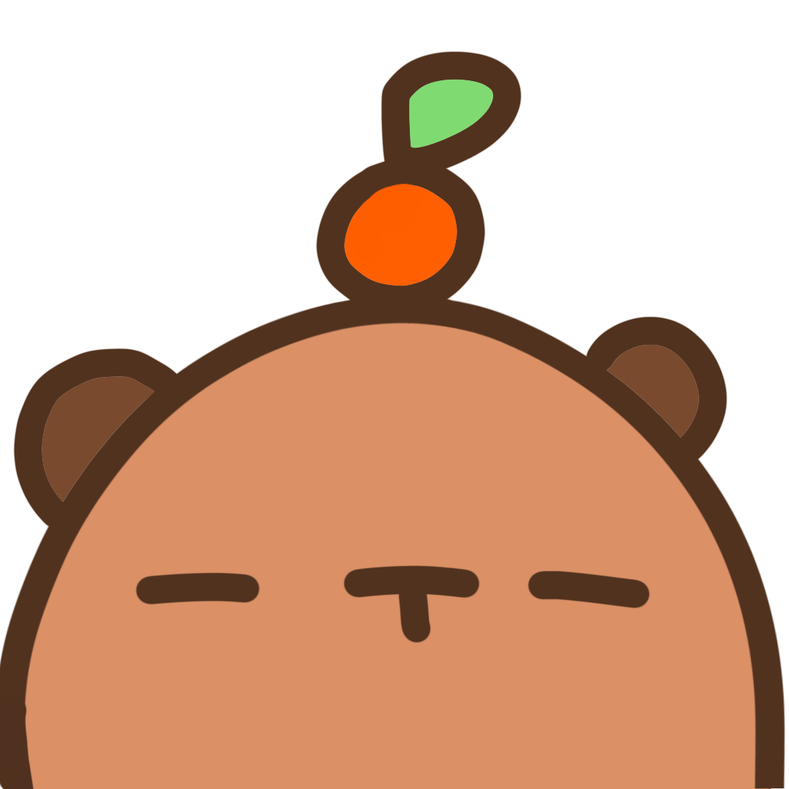

Tapioca was the first. Inspired by cats drawn by the artist @BasiilLeaf (on Instagram and X), the creator of Tapioca and Friends wanted to draw a cat similar in style. And thus, with some experimenting, Tapioca was born. She was — and is — heavily simplified. The body shape of Tapioca is extraordinarily simple to draw, resembling the letter M with a horizontal plateau between the two peaks. Tapioca has two dots for eyes and a W shaped mouth. Her name comes from the characters called Tapioca from Sumikko Gurashi, which was a franchise of characters that the creator especially liked at that time. (She still likes Sumikko Gurashi!)
After some unknown amount of time, the creator of Tapioca and Friends felt that Tapioca needed a friend. After seeing a crochet pattern for a cute little tooth beary, the creator decided to make a friend who was a bear for Tapioca. And this bear looked a lot like that tooth beary! Unfortunately, the creator wasn't feeling very creative at that time, and decided to name him Bear.
Lastly, but certainly not least, the creator of Tapioca and Friends had recently finished a crochet capybara, and she really loved it! She was thus motivated to create a capybara friend for Tapioca and Bear. With some sketching and doodling, Yuzu was born. After some research on what capybaras liked, the creator named the capybara Yuzu. Yuzu is a citrus put into capybaras' baths, and they do this in Japan.
All this time, the time period of creation has been very vague. While we do not have an exact date, we have reason to believe the entire trio was created in the summer of 2025, likely July. Photos from the creator's library first show Tapioca in July 2025, and another photo taken recently after a drawing of Tapioca was of the capybara that inspired Yuzu. Additionally, music from the creator's school band program, starting in 2025, show a small Tapioca drawn after her name.
That's a secret ;)
ok i'm joking
The creator of Tapioca and Friends is a person who goes by Yuurei (online. In the rare case that someone random online finds this website, I'm not going to dox myself).
Here's some info about her, in case you're curious!
Name: Yuurei (her socials are usually TapiocaCat317)
Age: unknown (haha you thought I'd tell you?)
Pronouns: she/her
She likes cats and the color purple, and also some anime and other stuff.
Name: Tapioca
Species: Cat
Birthday: April 23
Favorite Food: Boba
Appearance:
Name: Bear
Species: Bear
Birthday: October 15
Favorite Food: Grapes
Appearance:
Name: Yuzu
Species: Capybara
Birthday: January 8
Favorite Food: Oranges
Appearance: